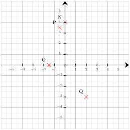
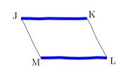
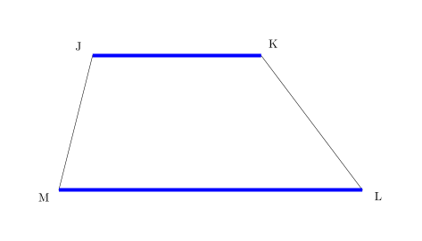

Déterminer les coordonnées respectives des points $O$, $P$, $Q$ et $N$

Les coordonnées respectives des points sont : $O({\color{#8B3C52}\boldsymbol{-1{,}5}};{\color{#8B3C52}\boldsymbol{0}})$, $P({\color{#8B3C52}\boldsymbol{-0{,}5}};{\color{#8B3C52}\boldsymbol{3{,}5}})$, $Q({\color{#8B3C52}\boldsymbol{2}};{\color{#8B3C52}\boldsymbol{-3}})$ et $N({\color{#8B3C52}\boldsymbol{0}};{\color{#8B3C52}\boldsymbol{4}})$
04
Question
Déterminer la valeur exacte de $VW$.
On utilise le théorème de Pythagore dans le triangle $UVW$, rectangle en $V$.
On obtient :
$\begin{aligned}
UV^2+VW^2&=UW^2\\
VW^2&=UW^2-UV^2\\
VW^2&=7^2-5^2\\
VW^2&=49-25\\
VW^2&=24\\
VW&={\color{#8B3C52}\boldsymbol{\sqrt{24}}}
\end{aligned}$
En simplifiant, on obtient : $VW = {\color{#8B3C52}\boldsymbol{2\sqrt{6}}}$.
Mentalement :
La longueur $VW$ est donnée par la racine carrée de la différence des carrés de $7$ et de $5$.
Cette différence vaut $49-25=24$.
La valeur cherchée est donc : $\sqrt{24}=2\sqrt{6}$.
$5z+6=-8z+9$ $5z+6{\color{blue}\boldsymbol{\,\,+\,\,8z}}=-8z+9{\color{blue}\boldsymbol{\,\,+\,\,8z}}$ $13z+6=9$ $13z+6{\color{blue}\boldsymbol{\,\,-\,\,6}}=9{\color{blue}\boldsymbol{\,\,-\,\,6}}$ $13z=3$ $13z{\color{blue}\boldsymbol{\,\div\,13}}=3{\color{blue}\boldsymbol{\,\div\,13}}$ $z=\dfrac{3}{13}$ La solution de l'équation $5z+6=-8z+9$ est ${\color{#8B3C52}\boldsymbol{\dfrac{3}{13}}}$.
03
Question
Préciser s'il s'agit d'un parallélogramme. $(JK) // (LM)$

$JKLM$ a deux côtés opposés parallèles, ${\color{#8B3C52}\boldsymbol{JKLM}}$ n'est donc pas forcément un parallélogramme comme le montre le contre-exemple suivant (il s'agit d'un trapèze).

04
Question
Sur la figure suivante :
$\leadsto J$ est sur $[IG]$,
$\leadsto K$ est sur $[IH]$, $\leadsto$ les droites $(GH)$ et $(JK)$ sont parallèles. Écrire la double égalité de Thalès.
Dans le triangle $GHI$ :
$\leadsto$ $J\in[IG]$,
$\leadsto$ $K\in[IH]$,
$\leadsto$ $(GH)//(JK)$,
donc d'après le théorème de Thalès, les triangles $GHI$ et $JKI$ ont des longueurs proportionnelles.
$\dfrac{IJ}{IG}=\dfrac{IK}{IH}=\dfrac{JK}{GH}$ Remarque On pourrait aussi écrire : $\dfrac{IG}{IJ}=\dfrac{IH}{IK}=\dfrac{GH}{JK}$
01
Question
Dans une association, $25\%$ des 150 membres participent à une olympiade de mathématiques.
Combien de membres ne participent pas à cette olympiade ?
Le nombre de membres participant à cette olympiade est égal à :
$150 \times \dfrac{25}{100} = 38$.
Le nombre de membres ne participant pas à cette olympiade est donc égal à :
$150 - 38 = {\color{#8B3C52}\boldsymbol{112}}$.
Une autre méthode consiste à calculer le pourcentage de membres ne participant pas à cette olympiade, qui est égal à $100\% - 25\% = 75\%$.
Le nombre de membres ne participant pas à cette olympiade est donc égal à :
$150 \times \dfrac{75}{100} = {\color{#8B3C52}\boldsymbol{112}}$.
02
Question
Lire l'abscisse de chacun des points suivants.
$\ G $ $(-3{,}2)$ $\ H $ $(-1{,}2)$ $\ I $ $(0{,}3)$
03
Question
Calculer le périmètre du carré $ABCD$ représenté ci-dessous :
Le polygone a $4$ côtés de longueur $2{,}5$ cm.
Le périmètre est donc égal à :
$4 \times 2{,}5 = {\color{#8B3C52}\boldsymbol{10}}$ cm.
04
Question
Dans le triangle $GHI$ rectangle en $G$, $HI=11\text{ cm}$ et $\widehat{GHI}=38^\circ$. Calculer $GH$ à $0,1\text{ cm}$ près.
Dans le triangle $GHI$ rectangle en $G$, le cosinus de l'angle $\widehat{GHI}$ est défini par : $\cos\left(\widehat{GHI}\right)=\dfrac{GH}{HI}$. Avec les données numériques : $\dfrac{\cos\left(38^\circ\right)}{\color{red}{1}}=\dfrac{GH}{11}$ $GH=11 \times \cos\left(38^\circ\right)$ soit $GH\approx{\color{#8B3C52}\boldsymbol{8{,}7}}\text{ cm}$.